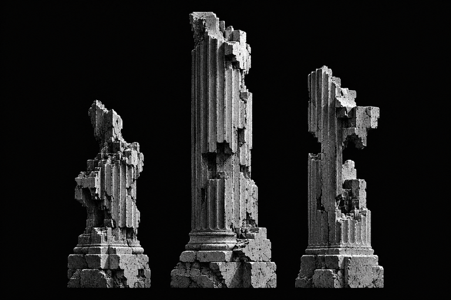

Digital Ruins
Lost Signal
Тишина пространства.
Ясность взаимодействия.
Изолированный образец основы: монохром, читаемый текст и простые элементы управления. Функциональность будущего приложения определит ТЗ.
Монохромная основа
Спектр предназначен для редкого оптического края Prism Glass. В базовых элементах используется монохром.
Элементы и состояния
Фокус, подписи и ошибки остаются заметными. Попробуйте изменить текст образца или открыть диалог.
Образец текста
Архитектура сохраняет свой силуэт.
PP Neue Machina Inktrap: единый шрифт, кириллица, локальная загрузка.
Выбор и обратная связь
Квадратные чекбоксы, пиксельные иконки и текстовые состояния. Все переключатели ниже управляют только этим образцом.
Кнопка во время загрузки
Сравните состояния вручную: надпись меняется без изменения размера. Сетевой запрос не выполняется.
Изображение и текст

Длинный текст читается слева направо внутри блока, который расположен по центру страницы. Структура остаётся плоской: разделители обозначают границы разделов, а карточки используются только там, где нужна самостоятельная поверхность.
Колонны уже содержат художественный дизеринг. Проверка пресета на чистом фотографическом исходнике остаётся отдельной задачей. Сравнить дизеринг.